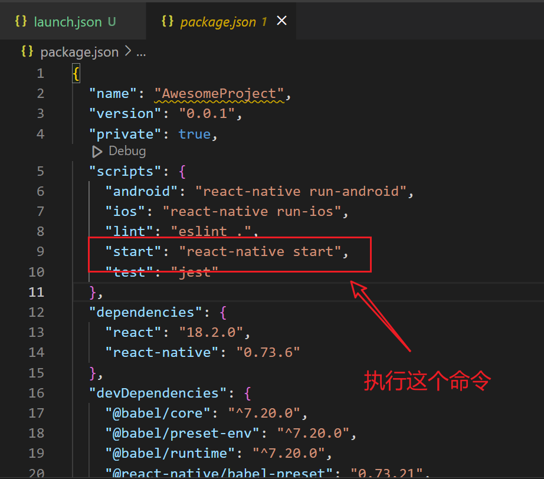

npm run到底做了什么？
大鹏一日同风起，扶摇直上九万里！
使用react-native脚手架创建的示例应用，npm run start 到底做了什么？
npm run start
当我们用npm（node package manager）来管理JavaScript/TypeScript项目的时候，都会在项目的根目录下生成一个package.json文件。而这个文件里的scripts字段就是用于适配npm run XXX命令的。
当我们执行npm run start的时候，就会执行对应的react-native start指令。可能有小伙伴会问了，那为什么不能直接执行react-native start命令呢？因为这样会报错，操作系统path环境变量里只有npm相关的命令，不存在react-native这个可执行文件；而我们在下载安装依赖的时候，会在node_modules/.bin目录下创建好名为react-native(或.cmd)(或者ps1)的可执行文件：

而在.bin目录下，一般针对一个依赖模块，会有3个可执行文件，没有后缀名的是对应Unix系的shell脚本，.cmd为后缀名的是windows bat脚本，.ps1为后缀名的则是PowerShell中可执行文件（可以跨平台），三者作用都是用node执行一个js文件。我们可以打开名为的这个文件react-native.cmd，看看里面的内容：
@ECHO off
GOTO start
:find_dp0
SET dp0=%~dp0
EXIT /b
:start
SETLOCAL
CALL :find_dp0
IF EXIST "%dp0%\node.exe" (
SET "_prog=%dp0%\node.exe"
) ELSE (
SET "_prog=node"
SET PATHEXT=%PATHEXT:;.JS;=;%
)
endLocal & goto #_undefined_# 2>NUL || title %COMSPEC% & "%_prog%" "%dp0%\..\@react-native-community\cli\build\bin.js" %*
假定项目的根目录(root)是D:\Development\Workspace\AwesomeProject
说明
- “%_prog%” 代表的就是node.exe可执行文件
- %dp0% 代表当前目录root
- title是设置当前命令行窗口的标题
- goto #undefined# 2>NUL 不知道有什么作用，感觉没什么实际用途，删掉也不影响命令执行。
在不同的目录下运行node bin.js报错
..\root>"node" "D:\Development\Workspace\AwesomeProject\node_modules\
.bin\\..\@react-native-community\cli\build\bin.js" start #失败
root\>"node" "D:\Development\Workspace\AwesomeProject\node_modules\
.bin\\..\@react-native-community\cli\build\bin.js" start #成功
root\node_modules>"node" "D:\Development\Workspace\AwesomeProject\node_modules\
.bin\\..\@react-native-community\cli\build\bin.js" start #成功
root\node_modules\.bin>"node" "D:\Development\Workspace\AwesomeProject\node_modules\
.bin\\..\@react-native-community\cli\build\bin.js" start #成功
root\node_modules\@任意目录>"node" "D:\Development\Workspace\AwesomeProject\node_modules\
.bin\\..\@react-native-community\cli\build\bin.js" start #成功
root\node_modules\非@开头目录>"node" "D:\Development\Workspace\AwesomeProject\node_modules\
.bin\\..\@react-native-community\cli\build\bin.js" start #失败
以上情况显示失败的都会提示找不到start命令
源码分析
使用VSCODE打开项目根目录root:D:\Development\Workspace\AwesomeProject
创建调试启动文件launch.json
{
"version": "0.2.0",
"configurations": [
{
"type": "node",
"request": "launch",
"name": "Launch Program",
"skipFiles": [
"<node_internals>/**"
],
"program": "${workspaceFolder}\\node_modules\\@react-native-community\\cli\\build\\bin.js",
"args": ["start"]
}
]
}
启动调试在bin.js文件打断点跟踪，最终找到是因为，代码会找项目根目录然后去加载react-native控制台应用，可用的commands。
备注 具体细节以后讨论。
nodejs中orm-sequelize的困惑
使用sequelize查询数据库的时候
categoryModle.findAll()
.then(m => {
res.render('index', { title: '爱游易', categoryList:m});
});
findAll方法返回的是一个promise对象，其中m查询结果为，sequelize\lib\model.js对象，而不是原生的数据库表的实体模型 model对象是对entityModel的一个封装，因此在前端用handlerbar直接读取entityModel的属性是读取不到的。 以下代码会报错。
{{#categoryList}}
<li data-category="{{folderName}}"><a href="javascript:void(0);">{{name}}</a></li>
{{/categoryList}}
有两种方式处理该异常
- 处理findAll回调函数将数据转成普通对象
- 给findAll添加{raw:true}参数
categoryModle.findAll({raw:true})//return raw objects[]
.then(m => {
res.render('index', { title: '爱游易', categoryList:m});
});